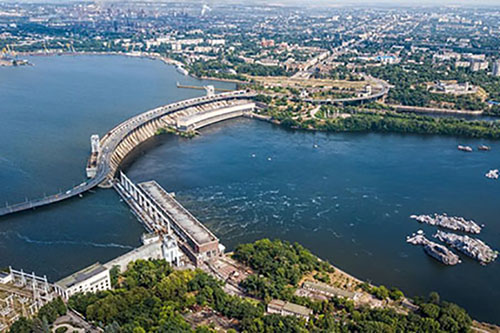
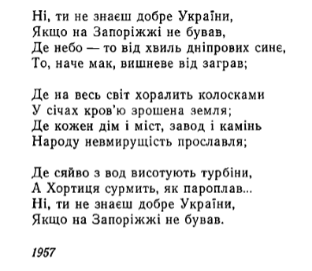
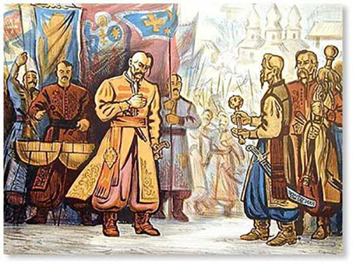
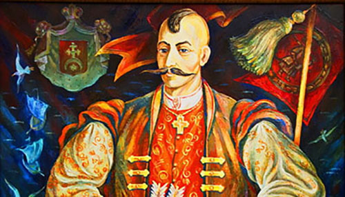
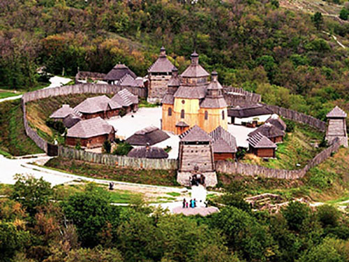
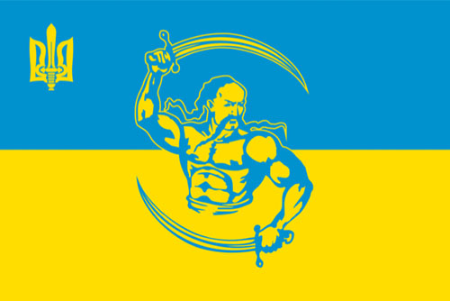

Ні, ти не знаєш добре України, якщо на Запоріжжі не бував
 Запоріжжя – одне з найдавніших українських міст, в якому досі відчувається козацький дух, попри сучасну забудову й індустріальні підприємства. Місто, засноване ще за часів Київської Русі.
Історичні цікавинки: колиска індоєвропейців
На думку лінгвістів й істориків, причерноморські степи Запорізької області були батьківщиною індоєвропейців – народу, від якого походить половина людства. Припускають, що індоєвропейці жили між Дніпром і Волгою і першими почали зводити кургани. Відомостей про цей народ зберіглося мало, адже він розселився по всій Євразії.
Найбільший річковий острів України
Хортиця – найбільший острів на Дніпрі, включений до списку семи чудес України. Його площа становить близько 23,5 кв. км, а це майже 10% відсотків території̈ сучасного міста.
У 2009 році на Хортиці відкрився історико-культурний комплекс “Запорізька Січ”, як узагальнення боротьби й досягнень козаків 16-18 століть. До повномасштабної війни комплекс працював як музей, проте наразі експозиція закрита. Однак вона залишається символом національної свідомості українців
Традиції Запоріжжя
На Запоріжжі, мабуть, як ніде в Україні, помітні традиції, які сягають корінням в багату історію краю. Сприятливий клімат і вдале географічне положення Запоріжжя привертали людину з незапам'ятних часів. Найдавніші стоянки первісних людей у річковій долині порожистої частини Дніпра відносяться до епохи середнього палеоліту (100-40 тис. років тому). Протягом багатьох століть територія краю була своєрідним коридором, яким проходили різні народи, де схрещувалися різні культури.
Кіммерійці, скіфи й сармати, готи і гуни, авари, хазари, половці, печеніги, слов'яни залишили після себе різноманітні археологічні пам'ятки. Після татаро-монгольської навали 1237-1240 рр. територія Запорізького краю на два століття увійшла до складу Золотої Орди. У 1445 р. запорізькі степи по лівому берегу Дніпра увійшли до складу Кримського ханства. З кінця ХV до середини ХІХ ст. їх населяли кочові та напівосілі ногайці.
Подією загальноукраїнського значення стало формування з окремих козацьких загонів та промислових артілей соціально-політичної та військової організації запорозького козацтва - Запорозької Січі («Війська Запорозького Низового»). Одним із його головних оплотів і символів став острів Хортиця, відомий ще з давньоруських часів.
Острів демократії
Унікальне значення козаччини у тому, що це був стихійно створений острів демократії, який, мабуть, випередив чимало європейських країн за своїм демократичним устроєм. Старшина козацтва обиралася прямим демократичним голосуванням. Козаки або викрикували імена, або підкидали шапки, що можна назвати відкритим голосуванням. Вони обирали зі свого середовища найкращих, яким довіряли своє життя.
Князь Дмитро Вишневецький
Давній рід Вишневецьких був відомий своєю мужністю у походах проти татар. Дмитро був найстаршим сином у родині. Свою службу він розпочав при барському старості Бернарді Претвичу. Тоді Дмитро сторожував кордон, стримуючи й влаштовуючи походи проти татар. Але вже скоро Вишневецький з невеликим загоном козаків перебрався до пониззя Дніпра. Після чергового самовільного походу на Кримське ханство Вишневецького викликав на розмову сам король Сигізмунд-Август. Між ними було укладено негласну домовленість, після якої князь став "стражником на Хортиці".
Дислокація Січі була ретельно продумана. В умовах постійної війни козаки мали завчасно побачити ворогів. Високі Дніпровські пороги й скелясті береги, до яких було не підібратись з води, давали козакам серйозну перевагу. Таке розташування ідеально підходило для утримування флоту та здійснення морських походів.
За проектом Вишневецького була зведена кам'яна твердиня, що укріплювалась валами та частково ровами по периметру. Довкола території поставили стіну з частоколу висотою в декілька метрів. На п'ятьох зведених бійницях постійно чергували козаки, озброєні гарматами. У вежах також зберігали військове спорядження й припаси.
Запорізька Січ
Центральною будівлею на Хортицькій Січі завжди була церква. Тут козаки проводили ради, на яких вирішували як і внутрішні питання, так й зовнішні щодо походів і війн. Православна віра була невід'ємним елементом життя козаків.
Жили козаки в куренях з верболозу: дах покривали очеретом, а стіни обмазували рідкою глиною, яку потім випалювали. Курені стояли довкола майдану, на якому розташовувалися канцелярія, кузня та зброярня, а також помешкання отамана й старшини.
Окрім військового мистецтва, українські козаки вправно вели господарство. Згідно з переказами, вони вирощували ячмінь, гречку та овес, розводили коней та велику рогату худобу.
Підсумок
Запорозька Січ стала першим на території України політичним формуванням з усіма ознаками республіки. Вона довго зберігала свою незалежність та займала визначне місце в міжнародних відносинах - європейські держави встановлювали з нею дипломатичні відносини та шукали військового союзу.